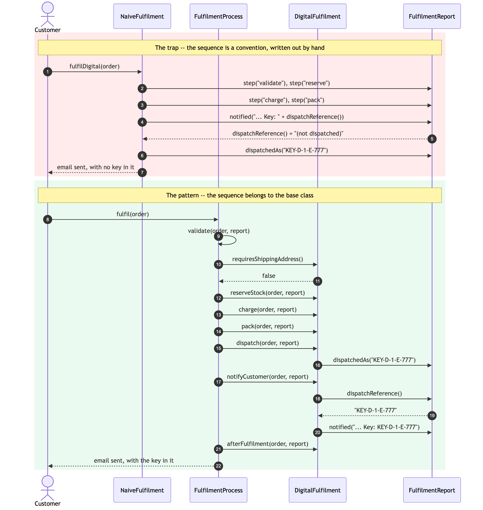

Template Method Pattern — Sequence Diagram
Two runs of the same order: a download that has to be paid for, issued a licence key, and emailed to the customer.
The first half is the hand-written route. The second half is the pattern. The divergence is entirely in who decides the order of the last two steps.

Reading It
Steps 1 to 7 — the naive run. Nothing here is unreasonable in isolation. Somebody wrote six steps out, and at some point somebody moved two of them. The report is asked for a dispatch reference that has not been set yet, so the customer's email quotes the placeholder (not dispatched). No exception, no failing compile — the order is fulfilled, the money is taken, and the email is useless.
Step 9 is the shape of the pattern. The customer calls fulfil on the base class, not on the route. From here on every arrow points downward into the subclass: the base class is driving, and DigitalFulfilment is being called back. That inversion is what people mean by "the Hollywood principle" — don't call us, we'll call you.
Steps 11 and 12 are the hook. Validation asks the route one question and the route answers false. Notice what it did not get to do: it did not skip validation, it did not replace it, and it could not have. The order still has to have lines and an email address.
Steps 13 to 16 are the required steps, handed out in the order the base class fixed. Each one records a step on the report, so the sequence ends up observable rather than merely intended.
Steps 17 to 20 are the payoff. notifyCustomer reads a value that dispatch set, and it can rely on that value existing because fulfil is final. The naive version had exactly the same two lines of code and got the wrong answer, because nothing was guaranteeing the order.
Step 21 — the empty hook, called anyway. afterFulfilment does nothing for this route. The base class calls it regardless, because a route that does need it — MarketplaceFulfilment, posting its commission — must not have to ask for the call site.
What Is Not Drawn
The other three routes. Warehouse, marketplace and click-and-collect run the identical set of arrows from step 9 onward, with different bodies behind them. Drawing a second one would add nothing, which is exactly the claim being made: FulfilmentDemo prints all four step lists and they are character-for-character identical.
Failure. If charge throws, the arrows for pack, dispatch, notifyCustomer and afterFulfilment never happen. There is nothing to draw, and that absence is the design — a later step must never run on the assumption that an earlier one succeeded.
The subclass calling back into the base class. It does not happen. No route calls fulfil, and only the two default steps ever call super. The traffic is one-way by construction.
See class-diagram.md for the static structure, and animation.html to step through one fulfil call a message at a time.